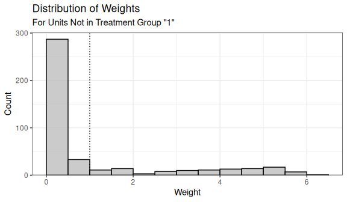
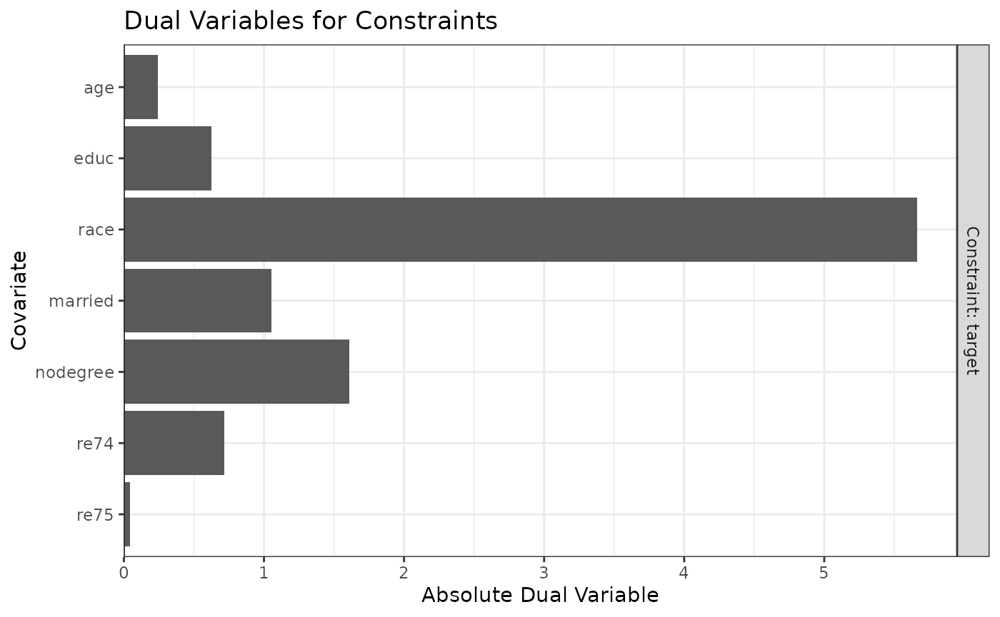
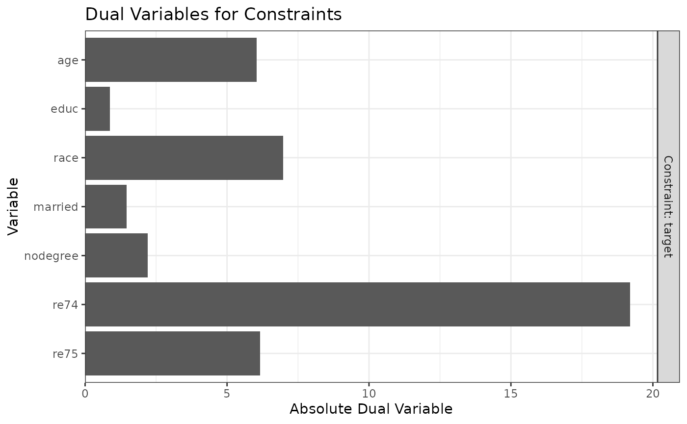

Using optweight to Estimate Stable Balancing Weights
Noah Greifer
2025-09-09
Source:vignettes/optweight.Rmd
optweight.RmdIntroduction
optweight implements stable balancing weighting (SBW) as described by Zubizarreta (2015). This involves estimating weights aimed at adjusting for confounding by balancing covariates while minimizing some measure of variability of the weights. SBW is also known as empirical balancing calibration weighting (Chan, Yam, and Zhang 2016) and entropy balancing (Källberg and Waernbaum 2023). These methods are related to inverse probability weighting (IPW), and there are some equivalences between SBW and IPW (Wang and Zubizarreta 2020). While IPW typically involves fitting a propensity score model for the probability of receiving treatment, SBW estimates weights directly that balance the covariates. The distinction between these two approaches is described in detail by Chattopadhyay, Hase, and Zubizarreta (2020).
SBW involves solving the following optimization problem:
\[\begin{align} \min_{\mathbf{w}} \quad & f(\mathbf{w}, \mathbf{b},\mathbf{s}) \\ \text{s.t.} \quad & \sum_{i:A_i=a} {s_i w_i} = \sum_{i:A_i=a} {s_i b_i} \quad \forall a \in \mathcal{A} \\ & \left| \frac{\sum_{i:A_i=a} {s_i w_i x_{k,i}}}{\sum_{i:A_i=a} {s_i w_i}} - \bar{x}_k^* \right| \le \delta_k \quad \forall a \in \mathcal{A}, \forall k \in \{1, \dots, K\} \\ & w_i > \varepsilon \quad \forall i \end{align}\]where \(\mathbf{w}=\{w_1, \dots, w_N\}\) are the estimated weights, \(\mathbf{s}=\{s_1, \dots, s_N\}\) are sampling weights, \(\mathbf{b}=\{b_1, \dots, b_N\}\) are “base” weights, \(A_i\) is a categorical treatment taking on values \(a \in \mathcal{A}\), \(x_{k,i}\) and is the value of covariate \(\mathbf{x}_k\) for unit \(i\). \(f(\mathbf{w}, \mathbf{b},\mathbf{s})\) is the objective function to minimize, a function of the estimated weights, base weights, and sampling weights. \(\delta_k\) is the balance tolerance for covariate \(k\), \(\bar{x}_k^*\) is the target value for covariate \(k\), and \(\varepsilon\) is the minimum weight allowed.
Generally, \(f\) represents a measure of dispersion from the base weights, weighted by the sampling weights. The original formula of SBW used \(f(\mathbf{w}, \mathbf{b},\mathbf{s}) = \frac{1}{N}\sum_i{s_i(w_i-b_i)^2}\), the weighted L2 norm. Entropy balancing uses \(f(\mathbf{w}, \mathbf{b},\mathbf{s}) = \sum_i{s_i w_i \log\left(\frac{w_i}{b_i}\right)}\), the weighted relative entropy between the estimated and base weights.
The interpretation of these constraints is as follows:
The first constraint is a scaling constraint that establishes a meaningful scale for the weights. In particular, that scale is determined by the base weights.
The second constraint is the balance constraint. A target value can be chosen for each covariate, and the weighted mean of the covariates in each treatment group must be within some tolerance of that target. That also guarantees the weighted means between treatment groups are within some tolerance of each other. It is possible to forgo a specific target and just require the weighted means to be equal to each other.
The final constraint is optional and restricts the minimum value of the weights. For some \(f\), the weights can be unbounded, and it is up to the user to require the weights to fall within some range. The original formulation of SBW used \(\varepsilon = 0\), but omitting this constraint altogether, which allows the weights to be negative, is also possible.
Asymptotic properties of SBW are described in Wang and Zubizarreta (2020). In general, the weights are precise and perform well, and adding approximate balance constraints (i.e., using \(\delta_k>0\)) tends to improve precision without greatly affecting bias. There is also a weak double-robustness property to the weights: the estimate is consistent if either the outcome model corresponds to the balance constraints or the implicit propensity score model corresponds to the true propensity score model. Different forms of \(f\) imply different assumptions about the propensity score model. Allowing \(\varepsilon\) to be negative allows for the possibility of negative weights, which can improve precision but induce extrapolation. It turns out that using a linear regression model for the outcome is equivalent to using SBW with the L2 norm, \(\delta_k=0\), and \(\varepsilon=-\infty\) (Chattopadhyay and Zubizarreta 2023).
Often \(\bar{x}_k^*\) are chosen to represent a known target group, like the full sample when targeting the ATE or the treated group when targeting the ATT. They can also be chosen to generalize the effect estimate to an arbitrary target population (Chattopadhyay, Cohn, and Zubizarreta 2024).
SBWs can be generalized to continuous treatments, in which case instead of balancing the covariate means, the treatment-covariate covariances are constrained to be balanced. This was explored in Greifer (2020), Tübbicke (2022), and Vegetabile et al. (2021). SBW can also be used to directly weight a sample to resemble a population, without needing to balance two treatment groups. This also known known as matching-adjusted indirect comparison [MAIC; Phillippo et al. (2020), Signorovitch et al. (2010)].
optweight contains functionality to perform these operations and assess their performance. It was designed to be user-friendly, compatible with the syntax used with WeightIt, and supported by cobalt for balance assessment, at the possible expense of some flexibility. The sbw package also implements some of these methods, prioritizing different aspects of the estimation. Entropy balancing is implemented in WeightIt, which also calls optweight to provide a simpler interface to SBW.
Using optweight
The main function in optweight is optweight(),
which uses a formula interface to specify the treatment, covariates, and
balance tolerance. Other functions in optweight simplify
specification of more detailed parameters and support diagnostics.
Below, we’ll use optweight() to estimate weights that
balance the covariates in an observational study. We’ll use the
lalonde dataset in cobalt and target the ATT
first. The treatment is treat, the outcome is
re78, and the other variables are the covariates to
balance.
## treat age educ race married nodegree re74 re75 re78
## 1 1 37 11 black 1 1 0 0 9930.0
## 2 1 22 9 hispan 0 1 0 0 3595.9
## 3 1 30 12 black 0 0 0 0 24909.5
## 4 1 27 11 black 0 1 0 0 7506.1
## 5 1 33 8 black 0 1 0 0 289.8
## 6 1 22 9 black 0 1 0 0 4056.5optweight() can be used simply by supplying the
treatment can covariates to the formula argument, the
dataset to the data argument, and the estimand to the
estimand argument (here, the ATT). By default,
optweight() minimizes the L2 norm, requires exact mean
balance on the covariates, and requires all weights to be greater than
\(10^{-8}\).
ow <- optweight(treat ~ age + educ + race + married + nodegree +
re74 + re75, data = lalonde,
estimand = "ATT")
ow## An optweight object
## - number of obs.: 614
## - norm minimized: "l2"
## - sampling weights: present
## - base weights: present
## - treatment: 2-category
## - estimand: ATT (focal: 1)
## - covariates: age, educ, race, married, nodegree, re74, re75Using cobalt::bal.tab() on the output computes the
weighted balance statistics.
cobalt::bal.tab(ow)## Balance Measures
## Type Diff.Adj
## age Contin. -0
## educ Contin. -0
## race_black Binary -0
## race_hispan Binary 0
## race_white Binary 0
## married Binary -0
## nodegree Binary -0
## re74 Contin. -0
## re75 Contin. -0
##
## Effective sample sizes
## Control Treated
## Unadjusted 429. 185
## Adjusted 108.6 185As expected, all mean differences are exactly 0 in the weighted
sample. We can use summary() to examine some properties of
the weights:
summary(ow)## Summary of weights:
##
## - Weight ranges:
## Min Max
## treated 1 || 1.
## control 0 |---------------------------| 6.002
##
## - Units with 5 greatest weights by group:
##
## 1 2 3 4 5
## treated 1 1 1 1 1
## 423 388 226 196 118
## control 5.5685 5.6016 5.6698 5.9221 6.0023
##
## L2 L1 L∞ Rel Ent # Zeros
## treated 0. 0. 0. 0. 0
## control 1.717 1.339 5.002 1.23 0
##
## - Effective Sample Sizes:
## Control Treated
## Unweighted 429. 185
## Weighted 108.6 185summary() produces some information about the
distribution of weights, including different measures of the dispersion
of the weights, each of which corresponds to one of the allowed
objective functions to minimize. RMSE Dev is the root mean
squared deviation of the estimated weights from the base weights (here,
the base weights are all 1). See ?summary.optweight for
more information about the other statistics. Lastly,
summary() produces the weighted and original (effective)
samples sizes.
We can use plot() on the summary() output
to visualize the distribution of the weights:

Because we targeted the ATT, only the weights for the control group are displayed (the treated group weights are all 1).
Below, we’ll adjust a few of the argument to see what affects they have on the weights.
tols
The balance tolerance is controlled by the tols
argument. This can either be a single value applied to all variables or
a vector with a value for each covariate. By default,
tols = 0. Let’s see what happens when we increase
tols to .02.
ow2 <- optweight(treat ~ age + educ + race + married + nodegree +
re74 + re75, data = lalonde,
estimand = "ATT",
tols = .02)
cobalt::bal.tab(ow2)## Balance Measures
## Type Diff.Adj
## age Contin. 0.02
## educ Contin. 0.02
## race_black Binary 0.02
## race_hispan Binary 0.00
## race_white Binary -0.02
## married Binary -0.02
## nodegree Binary 0.02
## re74 Contin. -0.02
## re75 Contin. 0.02
##
## Effective sample sizes
## Control Treated
## Unadjusted 429. 185
## Adjusted 118.8 185Now, all mean differences are less than .02. Note that by default,
cobalt::bal.tab() reports standardized mean differences for
continuous variables and raw mean differences for binary variables.
optweight() standardizes the balance tolerances the same
way: by default, tols refers to the largest standardized
mean difference allowed for continuous variables and the largest raw
mean difference for binary variables. To change whether tolerances for
binary or continuous variables should be in standardized units or not,
see the std.binary and std.cont arguments of
optweight.fit(), which optweight() calls under
the hood.
Allowing for more relaxed imbalance also increases the ESS. The RMSE deviation has shrunk correspondingly:
summary(ow2, weight.range = FALSE)## Summary of weights:
##
## L2 L1 L∞ Rel Ent # Zeros
## treated 0. 0. 0. 0. 0
## control 1.616 1.267 4.212 1.118 0
##
## - Effective Sample Sizes:
## Control Treated
## Unweighted 429. 185
## Weighted 118.8 185To supply each covariate with its own tolerance, a named vector must
be supplied. This can sometimes be a little tedious, so there is a
helper function, process_tols(), that simplifies this. Give
process_tols() the formula and dataset (and, optionally, an
initial tolerance or vector), and it will return a modifiable vector of
balance tolerances that can be supplied to optweight().
tols <- process_tols(treat ~ age + educ + race + married + nodegree +
re74 + re75, data = lalonde,
tols = .02)
tols## - tols:
## age educ race married nodegree re74 re75
## 0.02 0.02 0.02 0.02 0.02 0.02 0.02Here, we’ll relax the constraint on race and then
estimate the weights.
tols["race"] <- .07
tols## - tols:
## age educ race married nodegree re74 re75
## 0.02 0.02 0.07 0.02 0.02 0.02 0.02
ow3 <- optweight(treat ~ age + educ + race + married + nodegree +
re74 + re75, data = lalonde,
estimand = "ATT",
tols = tols)
cobalt::bal.tab(ow3)## Balance Measures
## Type Diff.Adj
## age Contin. 0.02
## educ Contin. 0.02
## race_black Binary 0.07
## race_hispan Binary 0.00
## race_white Binary -0.07
## married Binary -0.02
## nodegree Binary 0.02
## re74 Contin. -0.02
## re75 Contin. 0.02
##
## Effective sample sizes
## Control Treated
## Unadjusted 429. 185
## Adjusted 132.7 185We can see that for all covariates other than race, the
mean differences are at or below .02, but for race, the
mean differences are at or below .07. This led to an increase in ESS due
to the relaxed constraints.
norm
The norm argument controls which objective function is
used. The allowable arguments are "l2" for the L2 norm (the
default), "l1" for the L1 norm, "linf" for the
L\(\infty\) norm,
"entropy" for the relative entropy, and "log"
for the sum of the negative logs. The most thorough theoretical work has
been done on the L2 norm and relative entropy, and these tend to be the
easiest to optimize.
Weighting by minimizing the relative entropy is also known as “entropy balancing” (Hainmueller 2012; Källberg and Waernbaum 2023; Zhao and Percival 2017) and is available in WeightIt, which uses a more parsimonious representation of the problem. Weighting by minimizing the sum of negative logs is equivalent to nonparametric covariate balancing propensity score (npCBPS) weighting (Fong, Hazlett, and Imai 2018), which maximizes the empirical likelihood of the data to estimate the weights. A penalized version of npCBPS is available in CBPS and in WeightIt (which calls functions from CBPS), but optweight offers additional options not possible in those packages, such as specifying balance tolerances, targets, and different estimands.
Different solvers are available for each norm; see
?optweight.fit() for details.
Below, we’ll minimize the L2 norm, L1 norm, L\(\infty\) norm, and relative entropy and see how those choices affect the properties of the weights.
# L2 norm
ow_l2 <- optweight(treat ~ age + educ + race + married + nodegree +
re74 + re75, data = lalonde,
estimand = "ATT",
norm = "l2")
summary(ow_l2, weight.range = FALSE)## Summary of weights:
##
## L2 L1 L∞ Rel Ent # Zeros
## treated 0. 0. 0. 0. 0
## control 1.717 1.339 5.002 1.23 0
##
## - Effective Sample Sizes:
## Control Treated
## Unweighted 429. 185
## Weighted 108.6 185
# L1 norm
ow_l1 <- optweight(treat ~ age + educ + race + married + nodegree +
re74 + re75, data = lalonde,
estimand = "ATT",
norm = "l1")
summary(ow_l1, weight.range = FALSE)## Summary of weights:
##
## L2 L1 L∞ Rel Ent # Zeros
## treated 0. 0. 0. 0. 0
## control 2.082 1.281 10.83 1.239 0
##
## - Effective Sample Sizes:
## Control Treated
## Unweighted 429. 185
## Weighted 80.42 185
# L-infinity norm
ow_linf <- optweight(treat ~ age + educ + race + married + nodegree +
re74 + re75, data = lalonde,
estimand = "ATT",
norm = "linf")## Warning: The optimization failed to find a solution after 2e+05 iterations. The problem may be infeasible or more iterations may be required. Check the dual variables to see which
## constraints are likely causing this issue.
summary(ow_linf, weight.range = FALSE)## Summary of weights:
##
## L2 L1 L∞ Rel Ent # Zeros
## treated 0. 0. 0. 0. 0
## control 1.877 1.549 3.578 1.5 0
##
## - Effective Sample Sizes:
## Control Treated
## Unweighted 429. 185
## Weighted 94.81 185
# Relative entropy
ow_re <- optweight(treat ~ age + educ + race + married + nodegree +
re74 + re75, data = lalonde,
estimand = "ATT",
norm = "entropy")
summary(ow_re, weight.range = FALSE)## Summary of weights:
##
## L2 L1 L∞ Rel Ent # Zeros
## treated 0. 0. 0. 0. 0
## control 1.832 1.287 8.42 1.101 0
##
## - Effective Sample Sizes:
## Control Treated
## Unweighted 429. 185
## Weighted 98.46 185We can see that minimizing the L2 norm yields weights that have the lowest RMS deviation, minimizing the L1 norm yields weights that have the lowest mean absolute deviation, minimizing the L\(\infty\) norm yields weights that have the lowest maximum absolute deviation, and minimizing the relative entropy yields weights that have the lowest relative entropy. The L2 norm has the closest correspondence to the ESS (they have a 1:1 relationship), but there are some theoretical reasons to prefer other norms, especially when they correspond to certain assumptions about the true propensity score model. See Källberg and Waernbaum (2023) for more information on these assumptions.
estimand and targets
Different estimands can be targeted by supplying an argument to
estimand. Allowable estimands include the ATE, ATT, and
ATC. These ensure the covariate means in each group resemble those in
the full sample, the treated group, and the control group, respectively.
For example, if set estimand = "ATE", both groups will be
weighted so that the covariate means are equal to the covariate means in
the full sample, as demonstrated below.
The covariate means in the full sample can be computed using
cobalt::col_w_mean():
covs <- lalonde[-c(1, 9)]
cobalt::col_w_mean(covs)## age educ race_black race_hispan race_white married nodegree re74 re75
## 27.3632 10.2687 0.3958 0.1173 0.4870 0.4153 0.6303 4557.5466 2184.9382After estimating weights that target the ATE, we will see that the weighted covariate means in each group are equal to those in the full sample:
ow_ate <- optweight(treat ~ age + educ + race + married + nodegree +
re74 + re75, data = lalonde,
estimand = "ATE")
cobalt::col_w_mean(covs, weights = ow_ate$weights,
subset = lalonde$treat == 1)## age educ race_black race_hispan race_white married nodegree re74 re75
## 27.3632 10.2687 0.3958 0.1173 0.4870 0.4153 0.6303 4557.5466 2184.9382
cobalt::col_w_mean(covs, weights = ow_ate$weights,
subset = lalonde$treat == 0)## age educ race_black race_hispan race_white married nodegree re74 re75
## 27.3632 10.2687 0.3958 0.1173 0.4870 0.4153 0.6303 4557.5466 2184.9382In addition to targeting a natural sample, it’s also possible to
target a specific population by supplying an argument to
targets1. The theory behind this methodology is
described by Chattopadhyay, Cohn, and Zubizarreta
(2024).
To request a different target population, process_targets()
can be used to create a vector of target means which are supplied to the
targets argument of optweight().
targets <- process_targets(~ age + educ + race + married + nodegree +
re74 + re75,
data = lalonde)
targets## - targets:
## age educ race_black race_hispan race_white married nodegree re74 re75
## 27.3632 10.2687 0.3958 0.1173 0.4870 0.4153 0.6303 4557.5466 2184.9382By default, process_targets() computes the mean of each
covariate in the full sample. These can be modified similarly to
tols to specify target means. Note that for categorical
covariates, the proportions in the groups must sum to 1.
## - targets:
## age educ race_black race_hispan race_white married nodegree re74 re75
## 35.0000 10.2687 0.5000 0.3000 0.2000 0.4153 0.6303 4557.5466 2184.9382We can supply these to optweight() to request that the
covariate means in the weighted sample are equal to these target means.
We need to set estimand = NULL to ensure the
targets are obeyed. Failing to do this will produce a
warning.
ow_target <- optweight(treat ~ age + educ + race + married + nodegree +
re74 + re75, data = lalonde,
targets = targets,
estimand = NULL)
# Weighted covariate means in the two groups
cobalt::col_w_mean(covs, weights = ow_target$weights,
subset = lalonde$treat == 1)## age educ race_black race_hispan race_white married nodegree re74 re75
## 35.0000 10.2687 0.5000 0.3000 0.2000 0.4153 0.6303 4557.5466 2184.9382
cobalt::col_w_mean(covs, weights = ow_target$weights,
subset = lalonde$treat == 0)## age educ race_black race_hispan race_white married nodegree re74 re75
## 35.0000 10.2687 0.5000 0.3000 0.2000 0.4153 0.6303 4557.5466 2184.9382The treatment effect estimate from this method of weighting would have the interpretation of the estimate from a population with similar means to those of the sample but with a mean age of 35 years (older than the original sample) and a racial profile of 50% Black, 30% Hispanic, and 20% white.
Note that process_targets() can be supplied without a
formula if targets are to be specified for all variables in
data. We’ll use this syntax in the section on
optweight.svy() below.
Sampling weights and base weights
Sampling weights are used when attempting to generalize the estimates
from a sample to a specific target population. Some datasets come with
sampling weights in order for analyses using them to be valid. These
weights can be supplied to the s.weights argument of
optweight(). This has three effects: 1) the balance and
target constraints correspond to the product of the estimated and
sampling weights, 2) the target values for the covariates are weighted
by the sampling weights (if not supplied through targets),
and 3) the contribution of the estimated weights to the objective
function is weighted by the sampling weights. Sampling weights are also
used when bootstrapping using the fractional weighted bootstrap (Xu et al.
2020), e.g., as implemented in the fwb package. By
default, when s.weights is not specified, sampling weights
are equal to 1.
Base weights are a set of initial weights that have some properties
that the user wants to retain while enforcing balance constraints. The
estimated weights are chosen to minimize their distance from the base
weights, where that distance corresponds to \(f\). These weights can be supplied to the
b.weights argument of optweight(). By default,
when not specified, base weights are equal to 1. An example use of base
weights would be to enforce balance on a set of IPW weights estimated
using a flexible model that is unable to exactly balance the covariates.
This strategy was used by one of the winning methods in the 2016 ACIC
data competition (Dorie et al.
2019). We’ll demonstrate the use of base weights below.
First, we’ll estimate propensity score weights using generalized boosted modeling through WeightIt. This is a flexible machine learning model, and we can request that features beyond the covariate means be balanced by minimizing the largest Kolmogorov-Smirnov (KS) statistic in the weighted sample.
W_gbm <- WeightIt::weightit(treat ~ age + educ + race + married + nodegree +
re74 + re75, data = lalonde,
estimand = "ATT",
method = "gbm",
criterion = "ks.max")Next we’ll use optweight() to estimate a set of weights
that differ as little as possible (as measured by the root mean squared
divergence) from these estimated weights while enforcing exact balance
on the covariate means.
ow_bw <- optweight(treat ~ age + educ + race + married + nodegree +
re74 + re75, data = lalonde,
estimand = "ATT",
b.weights = W_gbm$weights)We’ll also estimate SBW weights with uniform base weights to see the difference in the properties of the weights.
ow <- optweight(treat ~ age + educ + race + married + nodegree +
re74 + re75, data = lalonde,
estimand = "ATT")Finally, we can look at balance on all three sets of weights on the means and KS statistics.
# Mean diferences
cobalt::bal.tab(W_gbm, stats = "m",
weights = list(ow_bw = ow_bw$weights,
ow = ow$weights))## Balance Measures
## Type Diff.weightit Diff.ow_bw Diff.ow
## prop.score Distance 0.395 0.382 1.13
## age Contin. -0.033 0.000 -0.00
## educ Contin. -0.061 0.000 -0.00
## race_black Binary 0.013 0.000 -0.00
## race_hispan Binary 0.006 -0.000 0.00
## race_white Binary -0.019 -0.000 0.00
## married Binary -0.022 0.000 -0.00
## nodegree Binary 0.086 0.000 -0.00
## re74 Contin. 0.037 0.000 -0.00
## re75 Contin. 0.069 0.000 -0.00
##
## Effective sample sizes
## Control Treated
## All 429. 185
## weightit 32.07 185
## ow_bw 31.62 185
## ow 108.64 185
# KS statistics
cobalt::bal.tab(W_gbm, stats = "ks",
weights = list(ow_bw = ow_bw$weights,
ow = ow$weights))## Balance Measures
## Type KS.weightit KS.ow_bw KS.ow
## prop.score Distance 0.189 0.183 0.488
## age Contin. 0.086 0.118 0.283
## educ Contin. 0.086 0.055 0.042
## race_black Binary 0.013 0.000 0.000
## race_hispan Binary 0.006 0.000 0.000
## race_white Binary 0.019 0.000 0.000
## married Binary 0.022 0.000 0.000
## nodegree Binary 0.086 0.000 0.000
## re74 Contin. 0.045 0.041 0.226
## re75 Contin. 0.072 0.051 0.140
##
## Effective sample sizes
## Control Treated
## All 429. 185
## weightit 32.07 185
## ow_bw 31.62 185
## ow 108.64 185Looking at the mean differences (in the columns
Diff.weightit, Diff.ow_bw, and
Diff.ow in the first stable), we can see that the GBM
weights from WeightIt alone did not balance the covariate
means, whereas both set of SBW weights from optweight did.
However, in the second table, we can see big differences in the KS
statistics between the SBW weights that incorporated the base weights
and those that didn’t. The KS statistics for the SBW weights that
incorporated the base weights (listed in the KS.ow_bw
column) are very close to those for the GBM weights (listed in the
KS.weightit column) because the estimated weights are very
close to the GBM weights. In contrast, the SBW weights that didn’t
incorporate the base weights have very high KS statistics for some
covariates (listed in the KS.ow column); they are unable to
take advantage of the distribution-balancing properties of the original
GBM weights.
In this way, incorporating the base weights provides a middle ground between the GBM weights and the basic SBW weights: they ensure exact balance on the means while attempting to retain as much similarity to the GBM weights as possible, thereby inheriting some of their balancing properties. Unfortunately, one of those properties is also a very low ESS, though in this case, little ESS is lost by enforcing the additional balance constraints. Using different norms with base weights can also be more effective than using with them uniform base weights, as different norms prioritize similarity to the base weights in ways that may retain different properties2.
Dual variables
Dual variables, also known as “shadow prices”, are part of the output
of the optimization problem that represent how “active” a given
constraint is at the optimum (Zubizarreta
2015). A large dual variable means that relaxing the
constraint will allow the objective function to reach a lower value.
They are related to the coefficients on covariates in a propensity score
model, representing how much each covariate is contributing to the
estimation of the weights. Zubizarreta (2015) describes
the utility of dual variables after SBW: they can be used to determine
which covariates can have constraints relaxed to improve precision and
which covariates can have constraints tightened without affecting
precision. The dual variables are available in optweight()
output in the duals component, but they can also be plotted
using plot(). They can also be useful for diagnosing
convergence failure; often, a constraint that is impossible to meet will
have a high dual variable when no solution can be found.
Below, we’ll demonstrate how we can use the dual variables to see how to modify constraints to try to take advantage of the bias-variance trade-off. First we’ll estimate SBW weights with tolerances of .02 for all covariates.
tols <- process_tols(treat ~ age + educ + race + married + nodegree +
re74 + re75, data = lalonde,
tols = .02)
ow <- optweight(treat ~ age + educ + race + married + nodegree +
re74 + re75, data = lalonde,
estimand = "ATT",
tols = tols)
summary(ow, weight.range = FALSE)## Summary of weights:
##
## L2 L1 L∞ Rel Ent # Zeros
## treated 0. 0. 0. 0. 0
## control 1.616 1.267 4.212 1.118 0
##
## - Effective Sample Sizes:
## Control Treated
## Unweighted 429. 185
## Weighted 118.8 185We can print the dual variables in the duals component
of the output object and plot them with plot():
ow$duals## constraint cov dual
## 1 target age 0.24485
## 2 target educ 0.62674
## 3 target race 5.66548
## 4 target married 1.05266
## 5 target nodegree 1.61135
## 6 target re74 0.71501
## 7 target re75 0.04373
plot(ow)
From this, it’s clear that race has the largest dual
variable, and re75 has the smallest. That means we can
likely get the biggest gains in ESS by relaxing the constraint for
race, whereas tightening the constraint for
re75 will have little effect on the ESS.
tols["race"] <- .1
ow2 <- optweight(treat ~ age + educ + race + married + nodegree +
re74 + re75, data = lalonde,
estimand = "ATT",
tols = tols)
summary(ow2, weight.range = FALSE)## Summary of weights:
##
## L2 L1 L∞ Rel Ent # Zeros
## treated 0. 0. 0. 0. 0
## control 1.424 1.113 3.638 0.91 0
##
## - Effective Sample Sizes:
## Control Treated
## Unweighted 429. 185
## Weighted 141.7 185By relaxing the constraint on race, our ESS increased by
quite a bit. We would not see the same increase had we instead relaxed
the constraint on a covariate with a smaller dual variable, like
re75:
tols[] <- .02
tols["re75"] <- .1
ow3 <- optweight(treat ~ age + educ + race + married + nodegree +
re74 + re75, data = lalonde,
estimand = "ATT",
tols = tols)
summary(ow3, weight.range = FALSE)## Summary of weights:
##
## L2 L1 L∞ Rel Ent # Zeros
## treated 0. 0. 0. 0. 0
## control 1.616 1.267 4.207 1.118 0
##
## - Effective Sample Sizes:
## Control Treated
## Unweighted 429. 185
## Weighted 118.8 185However, this also means we can tighten the constraint on
re75 without much loss in ESS. Below, we decrease the
tolerance on re75 to 0:
tols["re75"] <- 0
ow4 <- optweight(treat ~ age + educ + race + married + nodegree +
re74 + re75, data = lalonde,
estimand = "ATT",
tols = tols)
summary(ow4, weight.range = FALSE)## Summary of weights:
##
## L2 L1 L∞ Rel Ent # Zeros
## treated 0. 0. 0. 0. 0
## control 1.617 1.269 4.229 1.12 0
##
## - Effective Sample Sizes:
## Control Treated
## Unweighted 429. 185
## Weighted 118.7 185We see that despite the tighter tolerance, the ESS remains about the same. For reference, below are the balance statistics and ESSs for all four sets of weights:
cobalt::bal.tab(treat ~ age + educ + race + married + nodegree +
re74 + re75, data = lalonde,
weights = list(ow = ow$weights,
ow2 = ow2$weights,
ow3 = ow3$weights,
ow4 = ow4$weights))## Balance Measures
## Type Diff.ow Diff.ow2 Diff.ow3 Diff.ow4
## age Contin. 0.02 0.02 0.020 0.02
## educ Contin. 0.02 0.02 0.020 0.02
## race_black Binary 0.02 0.10 0.020 0.02
## race_hispan Binary 0.00 0.00 0.000 0.00
## race_white Binary -0.02 -0.10 -0.020 -0.02
## married Binary -0.02 -0.02 -0.020 -0.02
## nodegree Binary 0.02 0.02 0.020 0.02
## re74 Contin. -0.02 -0.02 -0.020 -0.02
## re75 Contin. 0.02 0.02 0.026 -0.00
##
## Effective sample sizes
## Control Treated
## All 429. 185
## ow 118.8 185
## ow2 141.7 185
## ow3 118.8 185
## ow4 118.7 185Again we can see that relaxing the balance constraint for
race increases the ESS significantly, whereas either
tightening or relaxing the constraint for re75 has little
effect on the ESS.
Multivariate treatments
It is possible to supply balance constraints for multiple (i.e.,
multivariate) treatments simultaneously to estimate a single set of
weights that satisfies them all. This approach is described by Chen and Zhou (2023) in the
context of multiple continuous treatments. optweightMV()
provides an interface to balancing multiple treatments and works
similarly to optweight(), though with the ability to supply
multiple balancing formulas. Though this can be used with conceptually
distinct treatments, it can also sometimes be useful to use it with
multiple transformations of a single treatment; for example, Greifer (2020) found
that in order to eliminate the bias due to certain kinds of imbalance
with a continuous treatment, the square of the centered treatment must
be uncorrelated with the covariates, in addition to the treatment itself
being uncorrelated with the covariates.
To use optweightMV(), supply a list of balancing
formulas to the formula.list argument. The
tols.list argument must also be a list with a vector of
tolerances for each treatment, each with a value for each covariate.
However, targets should be a vector with a value for each
unique covariate since one cannot specify multiple targets for the same
covariate. Below is example (not run) of how to specify a call to
optweightMV():
owmv <- optweightMV(list(t1 ~ x1 + x2 + x3,
t2 ~ x1 + x2 + x3,
t3 ~ x1 + x2 + x3),
data = data,
tols.list = list(c(x1 = .01, x2 = .01, x3 = .01),
c(x1 = .02, x2 = .02, x3 = .02),
c(x1 = .03, x2 = .03, x3 = .03)),
targets = c(x1 = 10, x2 = .34, x3 = 5.5))The syntax can be abbreviated by supplying a single value in each
element of tols.list that is applied to all covariates,
e.g., tols.list = list(.01, .02, .03); or, if the same
vector of balance tolerance is desired for all covariates for all
treatments, a list with a single vector, e.g.,
tols.list = list(c(x1 = .01, x2 = .01, x3 = .01)); or, if
the same tolerance is desired for all covariates and all treatments, a
list with a single value, e.g., tols.list = list(.02).
targets can be omitted to target the ATE (i.e., to balance
the covariates at their means in the sample), but no other estimands can
be specified.
One might be tempted to use optweightMV() to estimate
balancing weights for longitudinal treatments. While this is possible,
it’s not as simple as supplying a balancing formula for each treatment
balancing the treatment and covariate history to that treatment (Yiu
and Su 2020). Zhou and Wodtke (2020) describe
how to specify balance constraints for entropy balancing with
longitudinal treatments, and they involve balancing not the covariate
directly but rather the residuals in regressions of the covariates on
treatment and covariate histories. Functionality for this specific
method is not present in optweight, but is available in the
rbw package. It may be possible to implement this in
optweight manually, but I cannot advise on how to do so.
optweight.svy()
When the goal is not to balance treatment groups to each other or to
some target population but rather to balance one sample to a target
distribution, one can use optweight.svy() instead of
optweight(). The .svy suffix is an indication
that can be used as a method to generate survey weights so that the
sample generalizes to a population of interest with specific means.
optweight.svy() works just like optweight()
except that no treatment variable is specified and targets
should be specified.
This is useful in the context of matching-adjusted indirect
comparison [MAIC; Signorovitch et al. (2010)],
which involves weighting a given trial sample to resemble the covariate
distribution of some other trial’s sample. MAIC as originally described
is equivalent to entropy balancing (Phillippo et al.
2020), which can be requested by setting
norm = "entropy".
Below, we demonstrate weighting the control subset of
lalonde to resemble a specific target population. As with
optweightit(), it can be helpful to use
process_targets() to simplify specification of the
covariates means. If all variables in the dataset are to be specified,
the formula can be omitted (for both process_targets() and
optweight.svy()).
lalonde_c <- subset(lalonde, treat == 0,
select = -c(treat))
targets <- process_targets(lalonde_c)
targets## - targets:
## age educ race_black race_hispan race_white married nodegree re74 re75 re78
## 28.0303 10.2354 0.2028 0.1422 0.6550 0.5128 0.5967 5619.2365 2466.4844 6984.1697To request individual means, the targets can be set to those values.
To allow a covariate mean to vary freely, one can either omit it from
the calls to process_targets() and
optweight.svy() or set the target value to NA.
We’ll do that for re78, and set specific targets for the
other variables except re75, which we’ll leave at its
mean.
targets["age"] <- 40
targets["educ"] <- 9
targets[c("race_black", "race_hispan", "race_white")] <- c(.2, .2, .6)
targets["married"] <- .6
targets["nodegree"] <- .6
targets["re74"] <- 1000
is.na(targets["re78"]) <- TRUE
targets## - targets:
## age educ race_black race_hispan race_white married nodegree re74 re75 re78
## 40.0 9.0 0.2 0.2 0.6 0.6 0.6 1000.0 2466.5 NAWe can supply these to optweight.svy(). This time we’ll
set min.w to 0 to allow those with weights of 0 to be
effectively dropped from the sample.
ow_s <- optweight.svy(lalonde_c,
targets = targets,
min.w = 0)
ow_s## An optweight.svy object
## - number of obs.: 429
## - norm minimized: "l2"
## - sampling weights: present
## - base weights: present
## - covariates: age, educ, race, married, nodegree, re74, re75, re78
summary(ow_s)## Summary of weights:
##
## - Weight ranges:
## Min Max
## all 0 |---------------------------| 13.54
##
## - Units with 5 greatest weights by group:
##
## 404 152 111 19 16
## all 9.4881 9.669 11.3265 11.4289 13.5373
##
## L2 L1 L∞ # Zeros
## all 2.237 1.5 12.54 307
##
## - Effective Sample Sizes:
## Total
## Unweighted 429.
## Weighted 71.44We can see that the weights required to move the sample toward our
specified target decrease the ESS by quite a bit, and several units were
given weights of 0. This can actually be a good thing if it means less
data needs to be collected since those with weights of 0 are not
necessary for subsequent analysis. We can examine the weighted covariate
means using cobalt::col_w_means() as before, with the
estimated weights supplied to s.weights:
cobalt::col_w_mean(lalonde_c, s.weights = ow_s$weights)## age educ race_black race_hispan race_white married nodegree re74 re75 re78
## 40.0 9.0 0.2 0.2 0.6 0.6 0.6 1000.0 2466.5 4725.6We can see that the weighted mean of re78 is whatever
minimized the L2 norm of the weights since no constraint was placed on
it. As with optweight(), we can see how much each
constraint contributed to the increase in variability by examining the
dual variables:
plot(ow_s)
Here it’s clear that the constraint on re74 is
contributing the most, and that relaxing the constraint would have the
greatest impact on ESS. The constraint can be relaxed either by changing
the target to one closer to that of the original data (or closer to
where it would be if no constraint was placed on re74) or
by setting a more relaxed tolerance for re74 using
tols. We’ll use the latter option below:
tols <- process_tols(lalonde_c, tols = 0)
tols["re74"] <- 300
tols## - tols:
## age educ race married nodegree re74 re75 re78
## 0 0 0 0 0 300 0 0Here we set the tolerance for re74 to be 300. We need to
set std.cont = FALSE to tell optweight.svy()
that the tolerance for continuous variables should be in raw units, not
standardized units. Now we can interpret our constraint as allowing the
weighted mean for re74 to be within 300 of its specified
target of 1000.
ow_s2 <- optweight.svy(lalonde_c,
targets = targets,
min.w = 0,
tols = tols,
std.cont = FALSE)
summary(ow_s2, weight.range = FALSE)## Summary of weights:
##
## L2 L1 L∞ # Zeros
## all 2.07 1.44 10.68 290
##
## - Effective Sample Sizes:
## Total
## Unweighted 429.
## Weighted 81.15This increased the ESS of the weights, and below we can see that the
weighted mean for re74 is at most 300 away from 1000, while
the other variables are at their specified targets.
cobalt::col_w_mean(lalonde_c, s.weights = ow_s2$weights)## age educ race_black race_hispan race_white married nodegree re74 re75 re78
## 40.0 9.0 0.2 0.2 0.6 0.6 0.6 1300.0 2466.5 4710.8Estimating effects
Because SBW weights function just like IPW weights, the same
procedures can be used to estimate the effect of treatment in an
SBW-weighted sample. One only needs to run a regression of the outcome
on the treatment with the weights incorporated. It is critical that the
usual standard errors from lm() or glm(),
etc., are not used; special standard errors are required after
weighting. See
vignette("estimating-effects", package = "WeightIt") for
more details on estimating effects after weighting. WeightIt
provides tools for facilitating this when weights are estimated using
WeightIt::weightit(), which provides an interface to
optweight(), though with slightly fewer options
available.
Often, the best way to account for uncertainty in estimating a treatment effect after SBW is by bootstrapping. This ensures variability due to estimating the weights is correctly incorporated. The fractional weighted bootstrap is often particularly effective because no units are dropped from the sample in each bootstrap replication. When bootstrapping cannot be used (e.g., because it is too computationally demanding or the specified constraints cannot be expected to be satisfied in all bootstrap samples), using a robust standard error can be an acceptable alternative.
Below, we demonstrate both approaches with the lalonde
data. First, we estimate the weights for the ATT and fit the outcome
model.
ow <- optweight(treat ~ age + educ + race + married + nodegree +
re74 + re75, data = lalonde,
estimand = "ATT")
fit <- lm(re78 ~ treat, data = lalonde,
weights = ow$weights)
coef(fit)## (Intercept) treat
## 5145 1204Again, we must not use the usual standard errors produced by running
summary() on the lm() output; we must use
either bootstrapping or a robust standard error. First, we’ll use
bootstrapping with fwb, which implements the fractional
weighted bootstrap. This involves drawing a set of weights from a
distribution and performing the entire analysis with these weights
incorporated. These weights should be supplied to the
s.weights argument in optweight() and
multiplied by the returned weights before being used in
lm()3. We can use update() to
re-estimate the SBW weights and weighted regression model in each
bootstrap replication.
library(fwb)
bootfun <- function(data, w) {
ow_boot <- update(ow, s.weights = w)
fit_boot <- update(fit, weights = ow_boot$weights * w)
coef(fit_boot)
}
set.seed(123)
boot <- fwb(lalonde, bootfun,
R = 250, # more is always better, but slower
verbose = FALSE)## Warning: The optimization failed to find a stable solution.
## The optimization failed to find a stable solution.
## The optimization failed to find a stable solution.
## The optimization failed to find a stable solution.
summary(boot, ci.type = "wald")## Estimate Std. Error CI 2.5 % CI 97.5 %
## (Intercept) 5145 624 3923 6367
## treat 1204 804 -372 2781To use a robust standard error, it’s easiest to use functions in the
marginaleffects package. Supply the output of lm()
to marginaleffects::avg_comparisons() with
vcov = "HC3" to request a robust standard error for the
treatment effect estimate.
library(marginaleffects)
avg_comparisons(fit,
variables = "treat",
vcov = "HC3",
newdata = subset(treat == 1))##
## Estimate Std. Error z Pr(>|z|) S 2.5 % 97.5 %
## 1204 824 1.46 0.144 2.8 -411 2819
##
## Term: treat
## Type: response
## Comparison: 1 - 0Robust standard errors treat the weights as fixed, which often yields larger standard errors than the bootstrap.